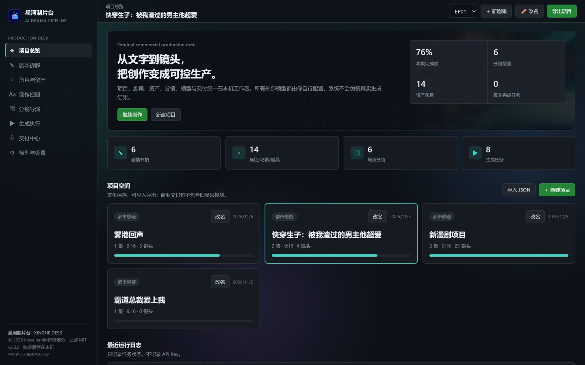
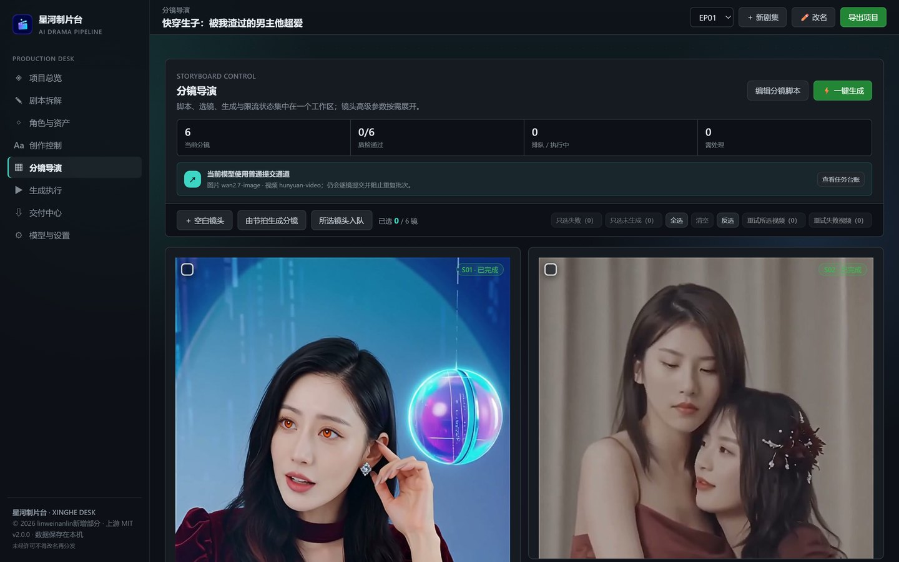
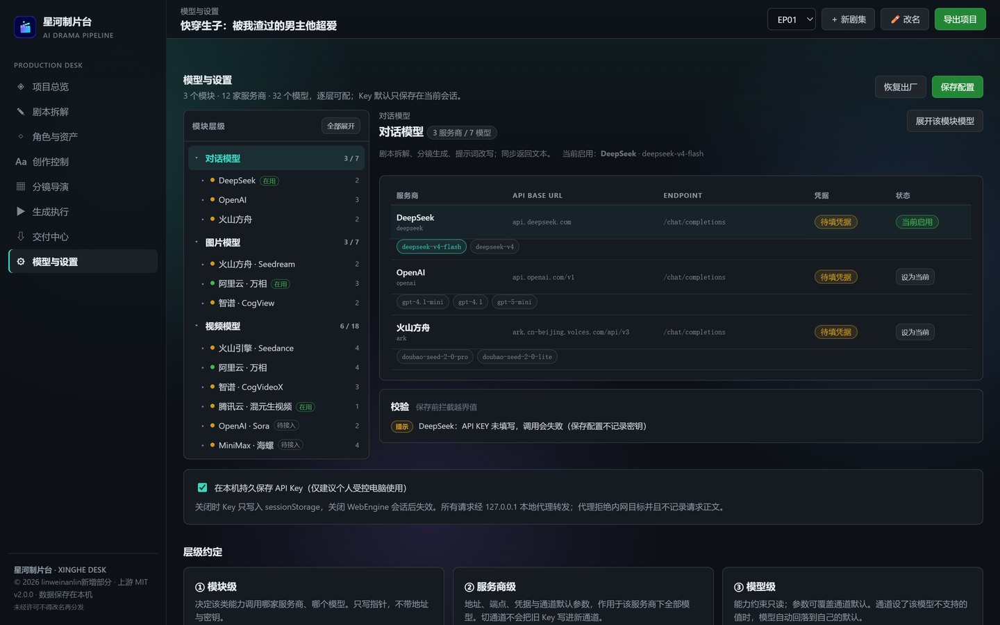
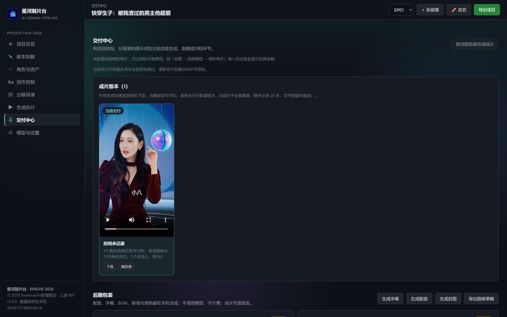

从文字到镜头
把一部竖屏短剧 / 漫剧放进一个本机工作台
剧本 → 节拍 → 资产 → 分镜 → 生成 → 交付，收进一条可视化流水线。桌面应用（PySide6 + 本地 HTTP 服务），所有模型调用由使用者自己配置，不伪造生成结果。

127.0.0.1，使用者自备各家模型服务的 API Key，剧本与成片全部留在本机，因此不提供在线试用；交付方式是「可复现的运行包 + 本机运行」。
核心能力
不是「一键出片」的玩具：系统只负责编排、调度、校验和打包，生成结果取决于你自己配置的模型服务。
| 项目 / 剧集 | 多项目并存、按集推进；项目可导出为 JSON，支持从旧安装一键搬迁项目与媒体 |
|---|---|
| 剧本拆解 | 剧本编辑、AI 续写 / 改写、本地拆分情节节拍、历史版本回滚 |
| 角色与资产 | 角色 / 场景 / 道具三类资产，定妆图、三视图、变体管理，提示词与历史归档 |
| 创作控制 | 镜头级参数（景别、运镜、风格、音轨等）按能力字段动态渲染，不出现无意义选项 |
| 分镜导演 | 由节拍一键生成分镜、镜头入队、失败重试与筛选、逐镜状态追踪 |
| 生成执行 | 任务队列与并发控制、额度保护开关；请求全部走本地代理，密钥不出本机 |
| 交付中心 | SRT 字幕、分镜 CSV、提示词包、EDL、封面、剪辑工程包（明文草稿 + 剪辑清单 CSV + SRT，自动探测剪映草稿格式）、FFmpeg 成片合成 |
| 模型与设置 | 四级配置：模块 → 服务商 → 模型 → 参数 |
技术亮点：把写死的模型配置改成可扩展的四级结构
这是整个项目里做得最重的一块。原版把 3 个模块的模型清单、默认值、表单字段硬编码在界面里，新增一家服务商要改 4 个文件、5 处判断，改漏一处界面就和后端对不上。
模块（对话 / 图片 / 视频）
└── 服务商（OpenAI / 火山方舟 / 阿里云百炼 / 智谱 / 腾讯混元 / MiniMax / 海螺 …）
└── 模型（每个模型自己的能力与默认值）
└── 参数（类型、范围、枚举、是否真正进请求）
单一数据源
以 web/assets/provider-schema.js 为唯一来源，界面按表渲染表单与导航。当前 3 个模块 / 12 家服务商 / 32 个模型 / 99 个参数项。
参数取值优先级
模型级显式值 → 服务商级（需通过兼容性校验）→ 模型默认值，避免不兼容模型被服务商默认值污染。
老配置迁移
升级后地址、模型与自定义参数不会被「与预设不一致就重置」的旧逻辑抹掉。
如实标注
哪些参数真正进请求、哪些只做存档，界面明确区分；服务商差异仍保留少量兼容分支，未做全量清除。
工程实践
- 测试：136 项单元测试（出处签名、层级表契约、提交范围、配音门禁、剪映草稿导出，以及时间轴对齐、依赖声明、素材路径、markup 转义、剪映客户端兼容探测等修复回归）；界面 41 项 CDP 探针跑在真实服务上。三轮结果、证据与覆盖缺口逐项记在测试档案
tests/TEST_ARCHIVE.md。 - 出处校验：逐文件 SHA-256 清单 + RSA-2048 签名，启动时校验，被改动的文件会被点名并拦截启动；私钥不进仓库。
- 零第三方前端依赖：原生 JS，无框架、无构建步骤，
file://或本地服务都能直接跑。 - 密钥策略：Key 只存本机、只进内存与本地文件；出站请求经
127.0.0.1本地代理，代理拒绝内网目标、不记录请求正文。 - 交付验证：草稿与成片共用一条时间轴；剪辑工程包在检测到新版加密草稿的客户端时自动改交付剪辑清单 CSV + SRT，并给出隔离验证步骤，不写用户草稿目录。



截图均为真实运行界面，未做美化或拼贴。剧本正文属未发表内容，此处不放剧本页。
来源与许可
本项目原版是 MIT 许可的开源项目 AI Drama Pipeline（Copyright (c) 2026 AI Drama Pipeline contributors）。我在此基础上做了架构重构与工程化改造，按 MIT 保留许可全文与 Copyright 声明，新增与修改部分的著作权归本人。
主导的部分：模型与配置的四级架构、schema 生成与三层配置编辑器；桌面外壳与本地服务解耦；出处校验体系；项目搬迁与改名工具；交付链路改造与剪映客户端兼容探测。
本仓库只含文档、截图与说明，不含源代码。源码存放在私有仓库，用于面试代码评审、技术交流时可申请只读权限或约线上演示。仓库内容采用「星河制片台 · 展示内容许可 1.0」。